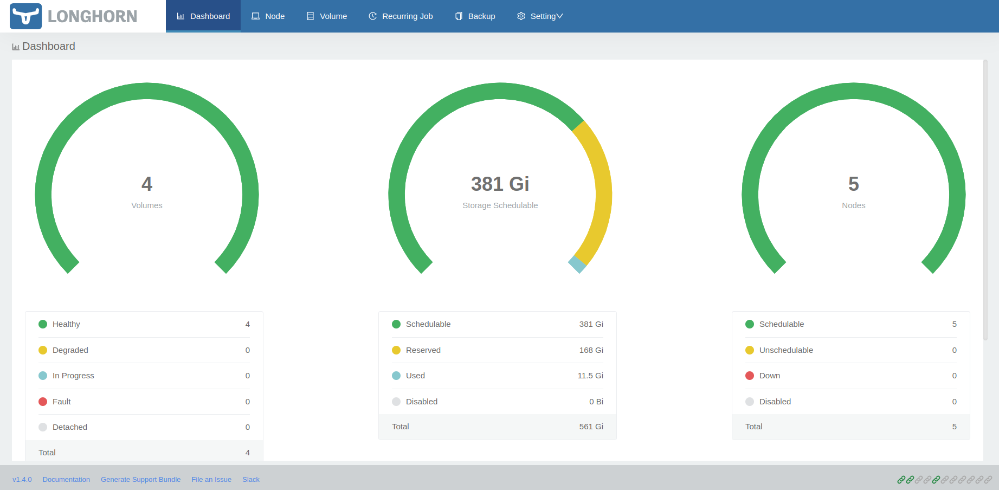

PI4 Stories¶
Raspberry Pi 4 cluster Series - Installation of Longhorn¶
Prepare our external USB block devices¶
On all our pi systems we added an USB block device of the same size and we are sure that they all put in the same USB port so that we are sure the all have the same block device name, e.g. /dev/sda
We create an ansible playbook to prepare the USB block devices and have it mounted on /app/longhorn on each node. E.g.
$ df /app/longhorn/
Filesystem 1K-blocks Used Available Use% Mounted on
/dev/sda1 117715864 61472 111631688 1% /app/longhorn
Using helm to perform the installation¶
If we want to use helm to performt the installation of longhorn we first need to install it as it isn't standard avaibale on these systems. Getting helm from URL https://helm.sh/docs/intro/install/.
$ curl -fsSL -o get_helm.sh https://raw.githubusercontent.com/helm/helm/master/scripts/get-helm-3
$ chmod 700 get_helm.sh
$ ./get_helm.sh
Helm v3.11.0 is available. Changing from version v3.7.1.
Downloading https://get.helm.sh/helm-v3.11.0-linux-arm64.tar.gz
Verifying checksum... Done.
Preparing to install helm into /usr/local/bin
helm installed into /usr/local/bin/helm
Alright, now we have the helm executable available on our local system (e.g. node n1). We can now download the helm longhorn chart repository:
$ helm repo add longhorn https://charts.longhorn.io
"longhorn" has been added to your repositories
$ helm repo update
Hang tight while we grab the latest from your chart repositories...
...Successfully got an update from the "longhorn" chart repository
Update Complete. ⎈Happy Helming!⎈
We need to be careful when we run the helm installer as we only want longhorn to use the USB block devices mounted at /app/longhorn and it should not be using the default location /var/lib/longhorn (as this might fill up the root partition).
Information on how we can actually do this can be found at "Adding Node Tags to New Nodes":
$ helm install longhorn longhorn/longhorn --namespace longhorn-system
--set defaultSettings.defaultDataPath="/app/longhorn/" --create-namespace
NAME: longhorn
LAST DEPLOYED: Tue Jan 24 14:38:41 2023
NAMESPACE: longhorn-system
STATUS: deployed
REVISION: 1
TEST SUITE: None
NOTES:
Longhorn is now installed on the cluster!
Please wait a few minutes for other Longhorn components such as CSI deployments, Engine Images, and Instance Managers to be initialized.
Visit our documentation at https://longhorn.io/docs/
Prepare the longhorn-ingress (required for UI)¶
In-depth information about accessing the longhorn UI can be found at longhorn-ingress.
In short this is the procedure we followed:
$ USER=gdha; PASSWORD=*******; echo "${USER}:$(openssl passwd -stdin -apr1 <<< ${PASSWORD})" >> auth
$ cat auth
gdha:$apr1$XXXXXXXXXXXXXXXXXXXXXXXX
$ kubectl -n longhorn-system create secret generic basic-auth --from-file=auth
secret/basic-auth created
$ kubectl -n longhorn-system get secret basic-auth -o yaml
apiVersion: v1
data:
auth: Z2RoYTokYXByMSRSTW11bU5oRSQyd3ZCMzNFM0hyLjY4aGZvL2xkVGsuCg==
kind: Secret
metadata:
creationTimestamp: "2023-01-24T13:40:16Z"
name: basic-auth
namespace: longhorn-system
resourceVersion: "13336"
uid: eeb2bd1f-9cae-4460-916d-b26c7eb97b7e
type: Opaque
Then we paste the following set of yaml command lines into kubectl to create the longhorn-ingress:
$ cat longhorn-ingress.yaml
apiVersion: v1
items:
- apiVersion: networking.k8s.io/v1
kind: Ingress
metadata:
annotations:
nginx.ingress.kubernetes.io/auth-realm: 'Authentication Required '
nginx.ingress.kubernetes.io/auth-secret: basic-auth
nginx.ingress.kubernetes.io/auth-type: basic
nginx.ingress.kubernetes.io/proxy-body-size: 10000m
nginx.ingress.kubernetes.io/ssl-redirect: "false"
creationTimestamp: "2022-02-01T11:41:47Z"
generation: 4
name: longhorn-ingress
namespace: longhorn-system
resourceVersion: "3312028"
uid: bb838795-97d8-44e7-a3f1-4f74dd0854ee
spec:
rules:
- http:
paths:
- backend:
service:
name: longhorn-frontend
port:
number: 80
path: /
pathType: ImplementationSpecific
status:
loadBalancer: {}
kind: List
metadata:
resourceVersion: ""
$ kubectl create -f longhorn-ingress.yaml
$ kubectl describe ingress -n longhorn-system
Name: longhorn-ingress
Labels: <none>
Namespace: longhorn-system
Address:
Ingress Class: traefik
Default backend: <default>
Rules:
Host Path Backends
---- ---- --------
*
/ longhorn-frontend:80 (10.42.3.5:8000,10.42.4.6:8000)
Annotations: nginx.ingress.kubernetes.io/auth-realm: Authentication Required
nginx.ingress.kubernetes.io/auth-secret: basic-auth
nginx.ingress.kubernetes.io/auth-type: basic
nginx.ingress.kubernetes.io/proxy-body-size: 10000m
nginx.ingress.kubernetes.io/ssl-redirect: false
Events: <none>
Use the longhorn UI¶
As we have setup metallb with traefik [5] the longhorn-ingress is running is now available at IP address 192.168.0.230 and to test the connectivity we can use curl:
$ curl -v 192.168.0.230:80
* Trying 192.168.0.230:80...
* TCP_NODELAY set
* Connected to 192.168.0.230 (192.168.0.230) port 80 (#0)
> GET / HTTP/1.1
> Host: 192.168.0.230
> User-Agent: curl/7.68.0
> Accept: */*
>
* Mark bundle as not supporting multiuse
< HTTP/1.1 200 OK
< Cache-Control: max-age=0
< Content-Type: text/html
< Date: Tue, 24 Jan 2023 16:11:19 GMT
< Etag: W/"63adbe68-401"
< Last-Modified: Thu, 29 Dec 2022 16:20:56 GMT
< Server: nginx/1.21.5
< Vary: Accept-Encoding
< Transfer-Encoding: chunked
<
<!DOCTYPE html>
<html lang="en">
<head>
<meta charset="UTF-8">
<meta name="viewport" content="width=device-width, initial-scale=1.0">
<meta http-equiv="X-UA-Compatible" content="IE=edge">
<!--[if lte IE 10]>
<script
src="https://as.alipayobjects.com/g/component/??console-polyfill/0.2.2/index.js,media-match/2.0.2/media.match.min.js"></script>
<![endif]-->
<style>
::-webkit-scrollbar {
width: 10px;
height: 1px;
}
::-webkit-scrollbar-thumb {
border-radius: 10px;
-webkit-box-shadow: inset 0 0 5px rgba(0,0,0,0.1);
background: #535353;
}
</style>
<link href="./styles.css?e0c09a3f2aae9c069d0c" rel="stylesheet"></head>
<body>
<div id="root"></div>
<script type="text/javascript" src="./runtime~main.6d7bda24.js?e0c09a3f2aae9c069d0c"></script><script type="text/javascript" src="./styles.985bf912.async.js?e0c09a3f2aae9c069d0c"></script><script type="text/javascript" src="./main.c5723e73.async.js?e0c09a3f2aae9c069d0c"></script></body>
</html>
* Connection #0 to host 192.168.0.230 left intact
However, we a browser pointing to http://192.168.0.230/#/dashboard we get a better overview:

Or, when selecting the node tab:
And, the details of one node:

References¶
[1] Ansible playbook to prepare USB devices
[2] Longhorn
[3] Adding Node Tags to New Nodes
[4] Accessing Loghorn through UI
[5] Replacing internal traefik with Metallb
Edit history¶
- update for longhorn version 2.4.0 (24/Jan/2023)